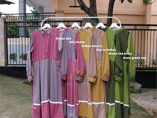
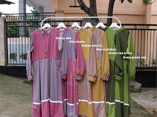

ABOUT
Rizqy.shoping merupakan brand usaha yang bergerak dibidang fashion khususnya jilbab rabbani serta pakaian muslim dan muslimah diberbagai usia. Rizqy.shoping memiliki toko offline dan juga online yang mudah diakses.Sebagai usaha yang baru berkembang, kualitas dan keaslian produk menjadi perhatian utama kami. Kami menerima berbagai masukan dan kritik demi produk Rizqy.shoping kedepannya. Setiap proses bisnis sangat diperhatikan dengan cermat . Rizqy.shoping berupaya untuk bersumbangsih kepada masyarakat sekitar, tidak mencemari lingkungan, berupaya mencapai zero waste. Sebagai usaha yang bergerak di bidang fashion, kami percaya bahwa laporan berkelanjutan ini dapat menjadi sebuah jendela untuk mengenal usaha kami secara lebih dekat , sekaligus untuk membuktikan bahwa usaha ini bukan hanya sekedar untuk meraih laba, tetapi juga mencapai ridho Illahi, serta menumbuhkan cinta generasi muda Indonesia pada fashion hijab yang elegan namun tetap nyaman digunakan sehari-hari.
PROFIL BISNIS
Rizqy.shoping berdiri pada tahun 2014. Bisnis ini bermula dari fashion hijab yang kala itu menjadi trend dikalangan masyarakat. Berbagai model hijab banyak bermunculan pada tahun tersebut. Pemilihan target konsumen kami tidak begitu sulit dikarenakan target kami adalah semua kalangan wanita disemua usia, mulai anak-anak, remaja, dewasa dan kalangan wanita parubaya sekalipun.
VISI
Memasarkan produk hijab, gamis, koko, dan pakaian muslim lainnya yan berkualitas, inovatif dan juga sebagai salah satu media dakwah islam.
MISI
Memudahkan para konsumen untuk mendapatkan busana muslim dan aksesorisnya dengan kualitas baik dan harga terjangkau. Serta Meningkatkan minat konsumen untuk berpakaian islami dengan menjual produk-produk yang menarik dan nyaman digunakan.